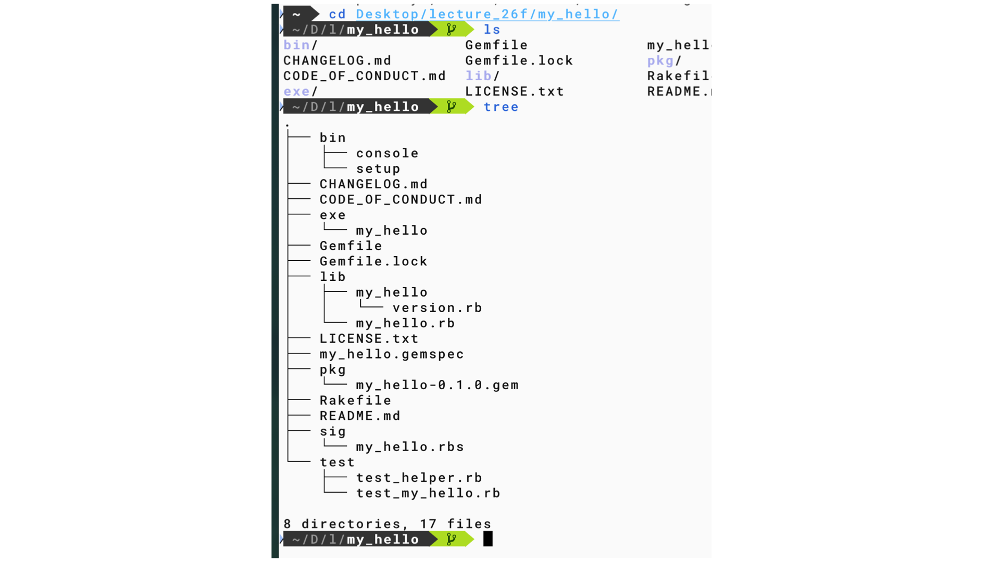

d8 11/11 TDD
Table of Contents
prev_button up_button next_button
1. sub_orgs
 |
2. scaffold(足場)
- gem my_hello –exe –test=minitest
- defaultで作るmy_helloは.git管理されているが， multi_scaleの.gitとconflictするので， .gitを削除している
3. introとして
- testの書き方とagent 仕様書md化の一致
- 生成AIに渡す仕様書はどう書くべきか
- AIが「読みやすい」形式と「読みにくい」形式
- 生成AIに渡す仕様書はどう書くべきか
4. for the 2nd day
- Kent BeckのTDDをRubyに直すのはちょっと遠すぎる感じ．
- Gem directoryでのminitestの動作を実演
- hcへの移植を示すべき